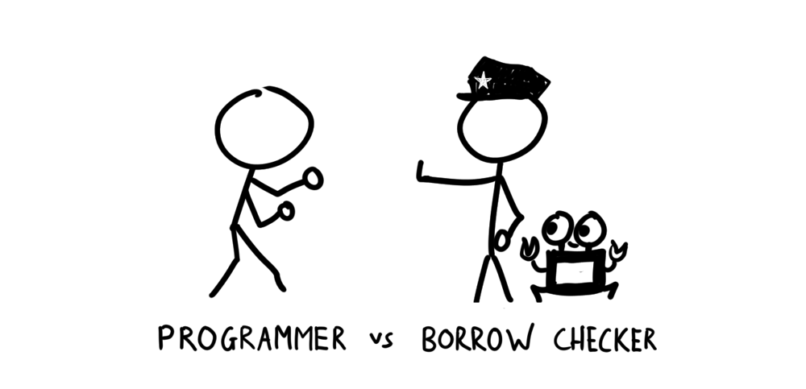
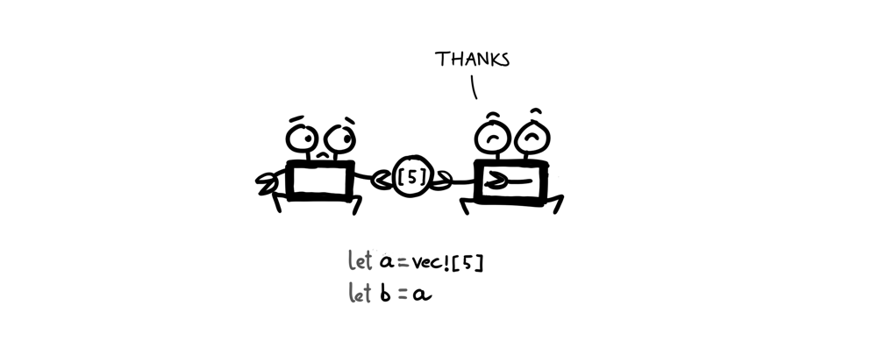
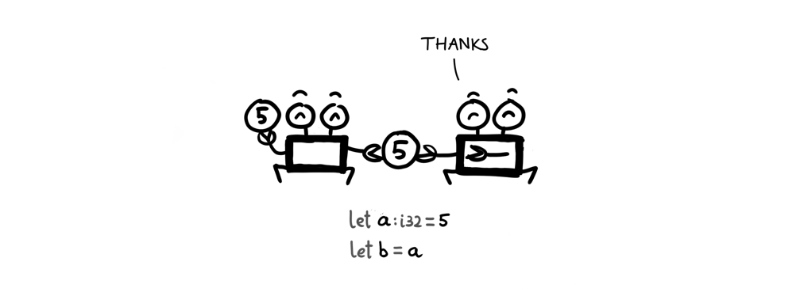
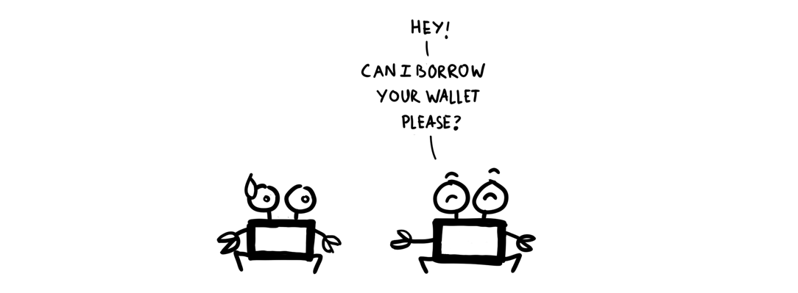
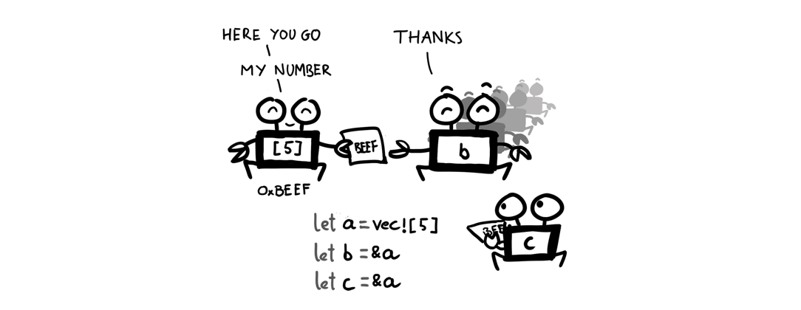
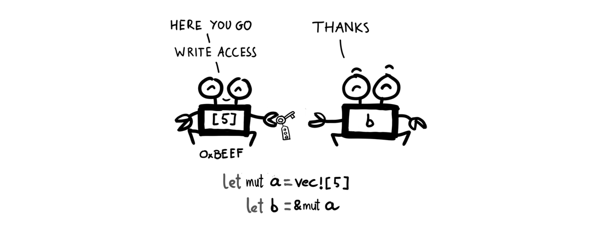

Đừng đánh nhau với borrow checker
TL;DR: Đừng bao giờ đánh nhau với borrow checker, nó được sinh ra để bạn phải phục tùng nó

Một trong những cơn ác mộng của lập trình viên khi làm việc với Rust đó là chuyện đập nhau với borrow checker, ví dụ như những lúc bị compiler chửi vào mặt như thế này.
fn main() {
let a = vec![5];
let b = a;
println!("{:?}", a);
}
error[E0382]: use of moved value: `a`
--> borrowchecker.rs:4:22
|
3 | let b = a;
| - value moved here
4 | println!("{:?}", a);
| ^ value used here after move
|
= note: move occurs because `a` has type `std::vec::Vec<i32>`, which does not implement the `Copy` trait
Chỉ với một câu lệnh gán thông thường, chúng ta đã bị ăn lỗi.
Và trong hầu hết mọi trường hợp thì kẻ có lỗi chính là các lập trình viên Borrow checker cũng chưa bao giờ đập ai (nó chỉ đứng đó và chửi vô mặt người ta thôi). Lỗi ở đây chính là vì chúng ta không hiểu về mô hình quản lý bộ nhớ của Rust, và các quy tắc mà ngôn ngữ lập trình này đặt ra.
Vậy Rust kiểm soát bộ nhớ như thế nào? Và làm sao để chúng ta có thể làm vừa lòng Rust compiler trong những trường hợp như thế này?
Bài viết này sẽ giúp các bạn hiểu được chuyện đó thông qua hai vấn đề chính: Ownership (quyền sở hữu của một biến) và Borrowing (vay mượn/tham chiếu giữa các biến).
Ownership
Trong máy tính, bộ nhớ (memory) là từ dùng để chỉ các ô nằm liền kề nhau để lưu trữ thông tin.
Khi chúng ta khai báo một biến mới trong Rust, một vùng nhớ sẽ được cấp phát trong bộ nhớ, và nó sẽ mọc thêm mắt mũi chân càng như thế này:
Just kididng một biến a khi được khai báo, máy tính sẽ cấp phát một vùng nhớ trên stack, với giá trị mặc định là giá trị được truyền vào khi khai báo. Địa chỉ của vùng nhớ này sẽ được gán cho biến a.
Khi đó ta có thể coi là: vùng nhớ này thuộc về biến a, và a có quyền sở hữu (ownership) đối với vùng nhớ đó.
Một vùng nhớ tại một thời điểm chỉ có thể thuộc về duy nhất một biến. Và điều gì xảy ra nếu ta gán một biến vào một biến khác?

Quyền sở hữu vùng nhớ của biến này sẽ được chuyển sang biến khác, ở ví dụ trên ta khai báo biến a là một vector, sau đó gán biến a cho b, lúc này vùng nhớ mà biến a sở hữu đã được chuyển (move) sang cho b.
Nếu ngay sau đó chúng ta tìm cách đọc biến a thì sẽ gặp lỗi, vì không còn mang giá trị nào để có thể đọc được nữa.
error[E0382]: use of moved value: `a`
|
3 | let b = a;
| - value moved here
4 | println!("{:?}", a);
| ^ value used here after move
|
Để tránh việc giá trị của một biến bị moved sau khi thực hiện phép gán, ta có thể implement trait Copy cho kiểu dữ liệu của biến đó.
#[derive(Copy, Clone)]
struct Point {
x: i32,
y: i32
}
Chức năng của Copy trait đúng với tên gọi của nó, khi phép gán xảy ra, thì thay vì move giá trị của biến này sang biến khác, Rust runtime sẽ copy giá trị đó. Và sau phép gán, cả 2 biến vẫn có thể được sử dụng một cách bình thường.

Một số kiểu dữ liệu như i32 thường được implement sẵn trait này. Để biết kiểu dữ liệu mình tính xài được implement sẵn những trait nào thì bạn có thể xem trong phần Trait Implementations của kiểu dữ liệu đó.
Borrowing
Sao Rust compiler khó tánh dữ vậy? Giá trị của một biến thì thuộc quyền sở hữu của biến đó à? Vậy làm sao để truyền dữ liệu qua lại giữa các biến? Lỡ kiểu dữ liệu tui xài hổng có implement trait Copy thì làm sao?
Đến đây thì chúng ta bắt gặp một vấn đề rất là đời thường, xin nhắc lại, mặc dù Rust là một ngôn ngữ lập trình nhưng nó luôn phản ánh đúng với thực trạng của xã hội, đây là vấn đề thường ngày trong chuyện giao tiếp giữa người với người, vâng, rất nhân văn: Muốn xài đồ của người khác thì tất nhiên phải đi mượn (borrow).

Để mượn một giá trị trong Rust rất dễ, chúng ta chỉ cần đặt dấu & vào trước biến cần mượn. Ví dụ:
let b = &a;
Và tất nhiên khi đem cho mượn, giá trị của một biến vẫn thuộc quyền sở hữu của biến đó, Rust chỉ tạo một tham chiếu (references) đến vùng nhớ chứa giá trị này, chứ không move nó đi chỗ khác. Chính vì vậy, một biến có thể cho mượn bao nhiêu lần tùy ý. Nhưng với một điều kiện, đó là các tham chiếu đến giá trị của biến đó là readonly. Tức là không ai có thể thay đổi được giá trị của biến, trừ chính biến đó.

Cũng giống như khi bạn cho ai mượn ví tiền của bạn chỉ để xem cái ví như thế nào thôi, thì người ta không có quyền lấy tiền từ ví của bạn. Nhưng với vợ bạn thì sẽ khác...
Vợ bạn có thể dùng &mut để vừa mượn vừa thay đổi được số tiền trong ví của bạn.

Lưu ý: Có thể bạn biết rồi, trong Rust, mọi giá trị được khai báo đều là immutable, nghĩa là không thể thay đổi được. Vì thế một biến được khai báo theo cách thông thường thì cũng immutable nốt. Nếu ta mượn một biến immutable để ghi (mutate nó) thì sẽ bị ăn lỗi:
error[E0596]: cannot borrow immutable local variable `a` as mutable
--> borrowchecker.rs:3:18
|
2 | let a = 10;
| - consider changing this to `mut a`
3 | let b = &mut a;
| ^ cannot borrow mutably
Để không phải đau đầu với chuyện mượn/trả, moving của các biến, chúng ta có các quy tắc cần nhớ sau:
- Một biến sau khi được gán thì không dùng được nữa (bị moved)
- Muốn dùng một biến sau khi gán thì có thể borrow nó, hoặc implement
Copytrait cho kiểu dữ liệu của nó - Một biến có thể được mượn để đọc (immutable borrow) không giới hạn số lần
- Chỉ có duy nhất một lần mượn để ghi (mutable borrow) tại một thời điểm
Tạm thời viết chừng này đã, bài này nằm trong thư mục draft lâu quá rồi . Ở phần tiếp theo chúng ta sẽ tiếp tục tìm hiểu sang khái niệm còn lại, đó là Lifetime.
Nếu không thích thì có thể comment